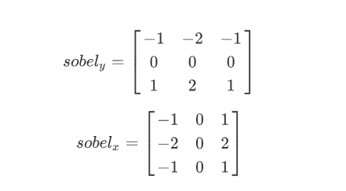
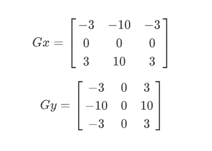
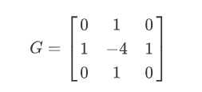
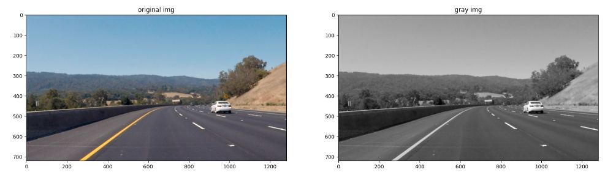
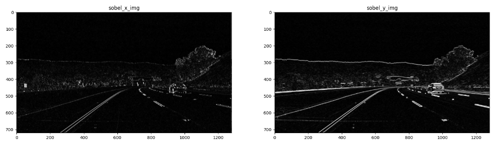
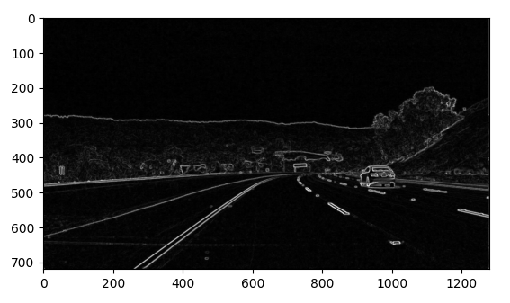
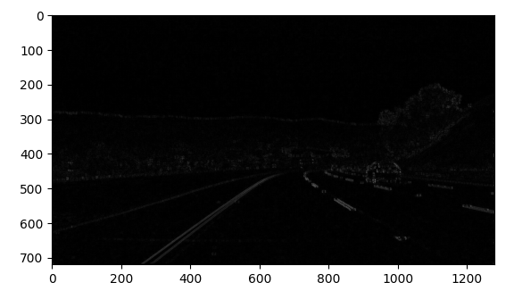
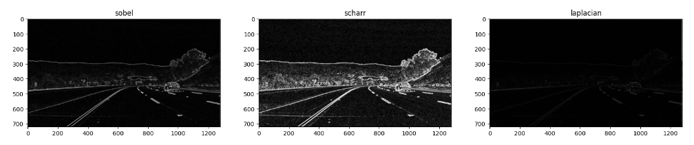

高通滤波: 通常使用来检测边缘
常见算子
sobel算子

Scharr算子 (更敏感/细致)

Laplacian(拉普拉斯)算子 (对噪声较敏感，一般搭配其他操作)

具体代码例子
1 | import matplotlib.pyplot as plt |

自定义filter
1 | # Create a custom kernel |
单向filter
1 | # Filter the image using filter2D, which has inputs: (grayscale image, bit-depth, kernel) |

双向filter
1 | sobel_x_img = cv2.filter2D(gray, cv2.CV_64F, sobel_x) # CV_64F 可含负数 |

通过和上面的结果对比，可以发现，上面的结果是单向的，而下面的结果是双向的。这是由于直接使用算子滤波时会产生负数，而在超出 0-255 范围时被截取。这也是为什么在下面的处理过程中需要先转换成 CV_64F (含负数) 的格式后，再取绝对值。
使用现成的接口
1 | # 也可以直接使用 cv2.Sobel，效果一致 |
合并不同方向
1 | # combine x and y |

1 | # not that good to compute xy together directly |

很明显，分别计算 x 和 y 再求和的效果比一次性计算的效果要好很多。
不同算子的结果对比：
1 | scharr_x_img = cv2.Scharr(gray, cv2.CV_64F, 1, 0) |
